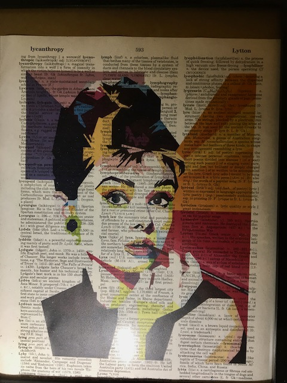

Some stuff on my walls

Indigenous language map of the Americas. They were giving these away for free at Savannah College of Art & Design during the one time I visited.
Audrey Hepburn; gift from Mom

Duke Ellington; my middle school was just giving this away back in 2008.

Café Terrace at Night by Vincent Van Gogh.

A poster for the concert that Hank Williams was to give on the same day he died, 1 January 1953; gift from Mom

A portrait of John Lennon from a sheet of postage stamps, also from Mom; here he was promoting his 1971 album "Imagine."

My great-grandfather, Albert Cerny, who directed traffic at a prominent intersection in Cleveland, OH for his entire career. My mom Googled his name one day and found someone selling prints of this image and newspaper column on eBay.
A street in the hills of Paris; gift from my bro before college began in 2013.
 A drawing of Water Street on Block Island, RI that I found at Scrap Exchange. Here is what this view looks like nowadays on Google Street View.
A drawing of Water Street on Block Island, RI that I found at Scrap Exchange. Here is what this view looks like nowadays on Google Street View.